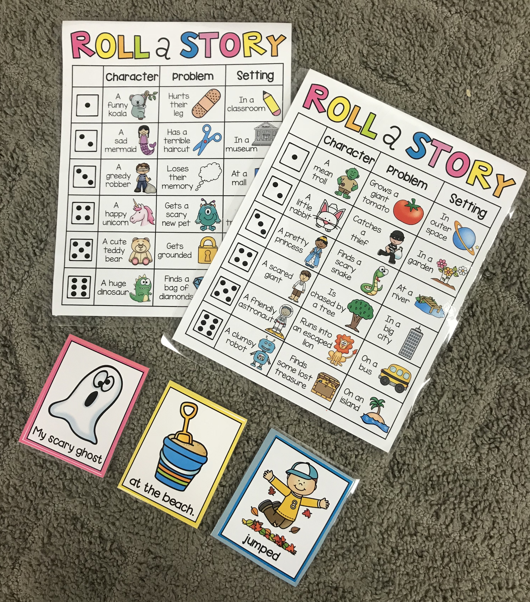

This Roll a Story center allows students to practice creative writing and notice the features of a sentence and the importance of nouns, verbs, and adjectives. This center can be adapted to meet the needs of many students. Students below level can practice writing phrases, students who are on level can create the sentences and students who are above level can create a story with multiple details and integrate vocabulary. This center also helps English learners with acquiring new vocabulary.
